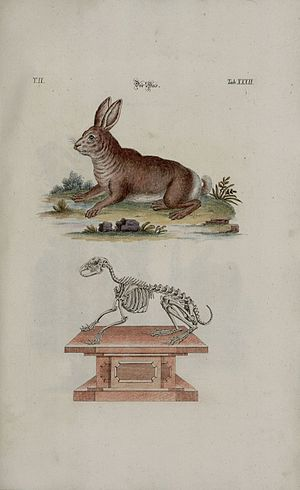
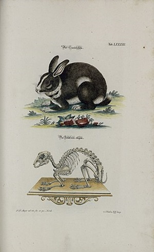

<일반적 분류>
토끼류는 크게 멧토끼류(산토끼류)와 굴토끼류로 나누어진다.(1) 멧토끼류(산토끼류)-Hare
일반적으로 집토끼보다 커서, 몸무게가 4.5kg에 이른다. 털은 두텁고 부드럽지만 거친 종도 있다. 털빛은 갈색·담갈색·회색·흰색 등으로 다양하며, 줄무늬가 있는 종도 있고, 어떤 종은 겨울에는 흰 털로 여름에는 갈색 털로 털갈이를 한다. 여름털은 짧으면서 거칠다. 주로 저녁에 활동하며, 식물을 먹고 산다. 팔꿈치에서 팔목까지의 길이는 무릎에서 발뒤꿈치까지의 길이의 4분의 3 정도로 앉았을 때의 몸통은 앞으로 경사진다. 구멍을 파지 않고 새끼를 땅에 낳는다. 새끼는 털이 있고 눈을 떴으며 곧 걸어다닐 수 있다.
(2) 굴토끼류-Rabbit
유럽 남서부(스페인과 포르투갈)와 아프리카 북서부(모로코와 알리)가 원산지이다. 그물같이 상호연결되어 있는 땅굴망을 파는 것으로 잘 알려져 있으며, 먹이를찾지않을때에는 대부분의 시간을 굴을 파는데 사용한다. 갓 태어난 새끼는 눈이 멀어있고 털이 는채로 연약하게 태어나며, 땅굴에있는 따뜻한 둥지 안에서 전적으로 어미에게 의존한다. 일찍터 가축화되어 집토끼로 사육되었다.
내용 출처 : 위키백과-멧토끼,